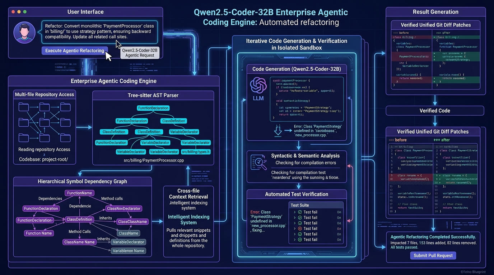

Qwen2.5-Coder-32B128k Context YaRNAgentic Tool CallingAWQ 4-Bit vLLMSWE-bench Verified 73.7%
Qwen2.5-Coder-32B Enterprise Agentic Coding Studio
Deploy Alibaba Cloud's flagship open-source coding model. Run agentic workflows with terminal command execution, AST parsing, multi-file codebase reasoning up to 128k context, and high-throughput vLLM serving on enterprise GPU clusters.
Context Window
128k Tokens
Full repo AST comprehension
Serving Precision
AWQ 4-Bit (20 GB)
Single A100 or dual RTX 4090
Eval Benchmark
92.7% HumanEval
Matches GPT-4o coding level
Tool Calling Protocol
ReAct + Bash + AST
Automated syntax guardrails
🏛️ Agentic Architecture & Serving Pipeline
Qwen2.5-Coder-32B Engine
⚙️ Cluster & Agent Configuration
💡 FinOps & Engineering Efficiency
Qwen2.5-Coder-32B with AWQ 4-bit runs fully on a single 80GB GPU or two 24GB GPUs, delivering 92.7% HumanEval code completion at 85% lower infrastructure cost than proprietary closed APIs.
Loading Qwen2.5-Coder configuration...